Using Custom Eases in Actions
This lesson will cover using Custom Eases in your Actions with the aid of the SampleCurve resource. First, we’ll take a more in-depth look into what an ease actually is, what they can do for you, and what they look like when drawn on a sample curve.
A Closer Look at Easing Functions
Eases are used primarily in what is called “tweening”, short for in-betweening (and Actions are Zero Engine’s form of tweening). Tweening is a procedure for interpolation between two values that can provide animation through the use of mathematical functions without the user having to adjust any frames herself. Eases are functions that control the rate of acceleration of the change in value. Usually, eases are used to make animations look more natural or “life-like”, though the most basic of eases–Linear–is decidedly sterile-looking or robotic, as we can see in this example of a simple moving platform:

The platform moves side to side at a steady, constant rate of motion. In other words, its rate of movement is linear. For the sake of comparison, let’s look at another, nicer-looking, more “life-like” ease; specifically, the QuadInOut ease (which uses the quadratic function to derive acceleration):

As you can see, in this case, the acceleration changes throughout the movement from left to right (and vice versa). It start slow, builds up speed, then slows back down once it nears the end. You have probably come across this type of movement in your everyday life. For example, elevators use a non-linear movement. Imagine if a high-speed elevator in a high-rise building did not change its acceleration, and the elevator comes to a complete stop while at the relatively high speed it moves at as it passes floors: every one in it would go flying to the ceiling. Instead, as the elevator approaches its destination, it slows down so that it comes to a smooth, non-person-launching stop (this might something to think about when creating elevator platforms in your own games if you’re looking to keep things realistic).
Visualising Eases
As you may have noticed from the brief explanation above, eases are primarily a function that acts on change in value over time. This means we can easily visualize them using a standard 2D graph, where the x-axis represents change in time and the y-axis represents change in value. Here are all of the most commonly used standard and exotic eases visualized on a graph.
Sine Eases
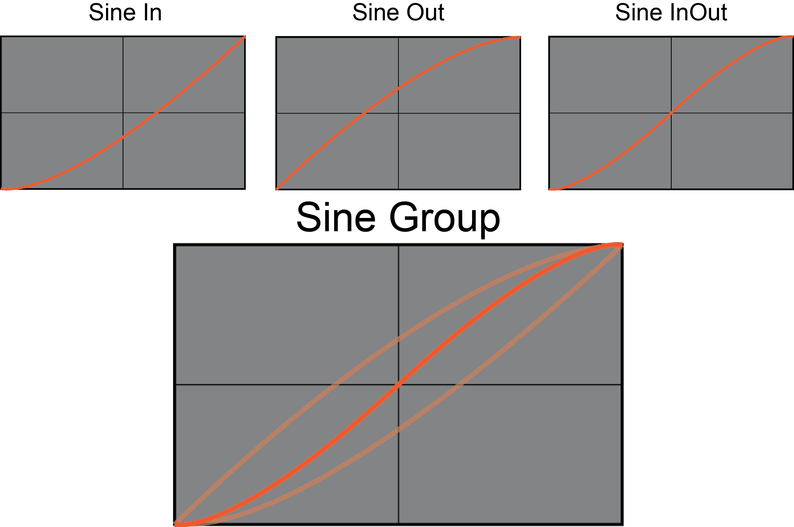
The Sine group, as you might have guessed, is based off a sine wave. It’s one of the most commonly used eases behind Quadratic and is already built into Zero’s Ease types.
Quadratic Eases
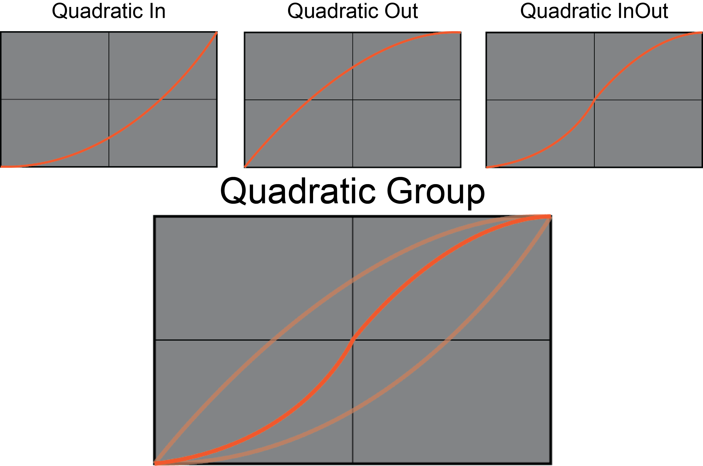
The Quadratic group is by far the most popular and commonly used ease type as it provides a natural and nicely-flowing animation. The three Quadratic eases are also built into Zero’s ease types.
Cubic Eases
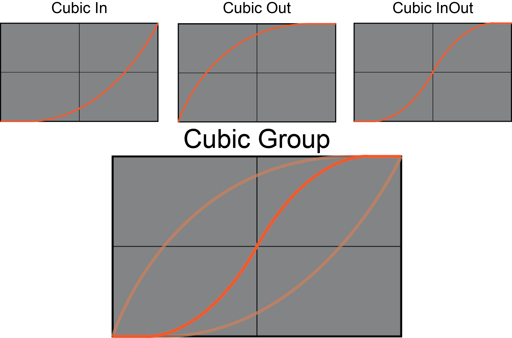
Whereas the Quadratic group is based on raising the completion percentage at a certain point in the tween by a power of two, cubic raises it by three, providing a slightly more “dramatic” effect.
Quartic Eases
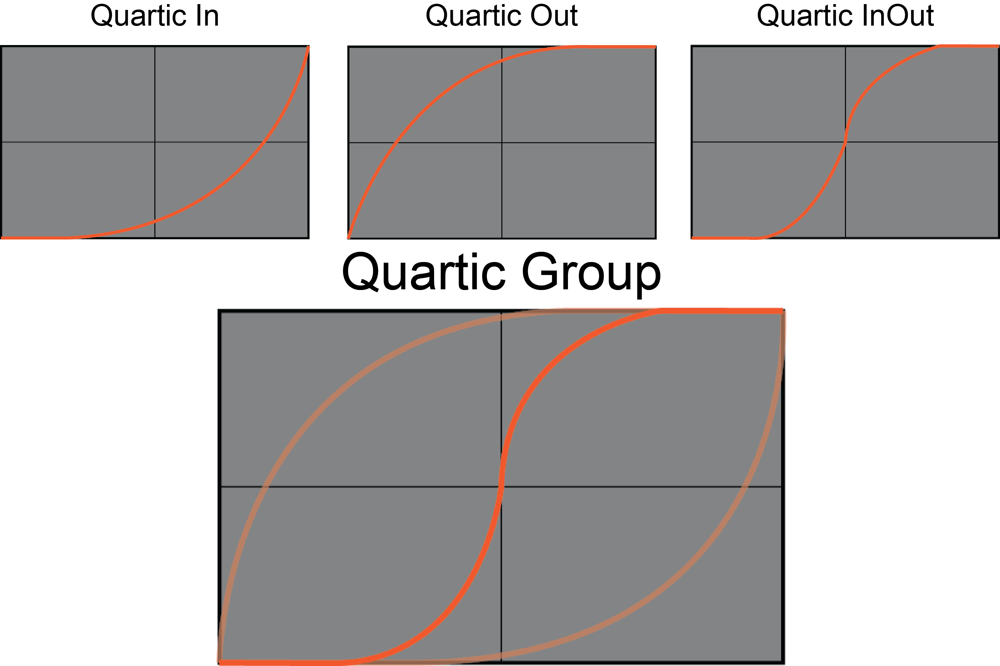
The Quartic group is identical to the Cubic group except that it raises the percentage of completion by a power of four.
Quintic Eases
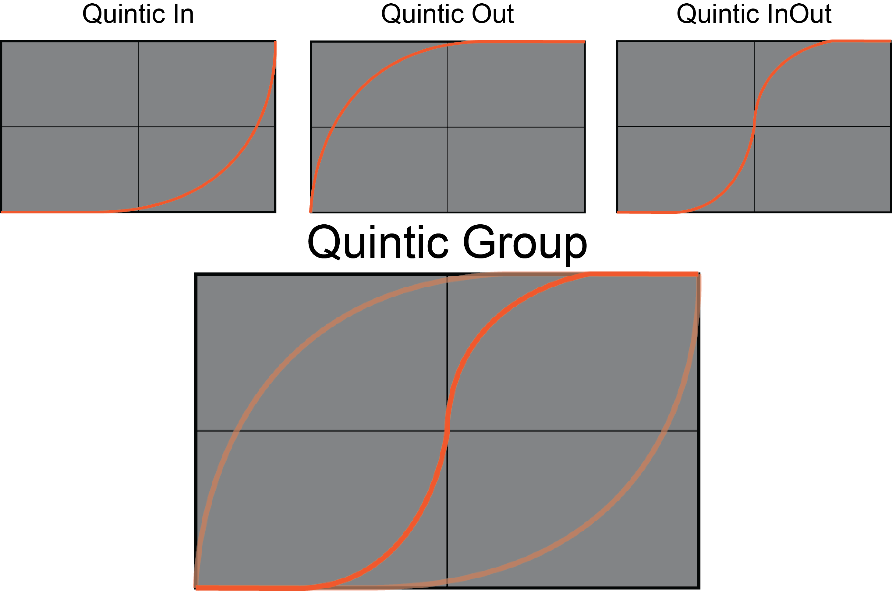
Again, the Quintic group is identical to the Cubic group except that it raises the percentage of completion by a power of five.
Expo Eases
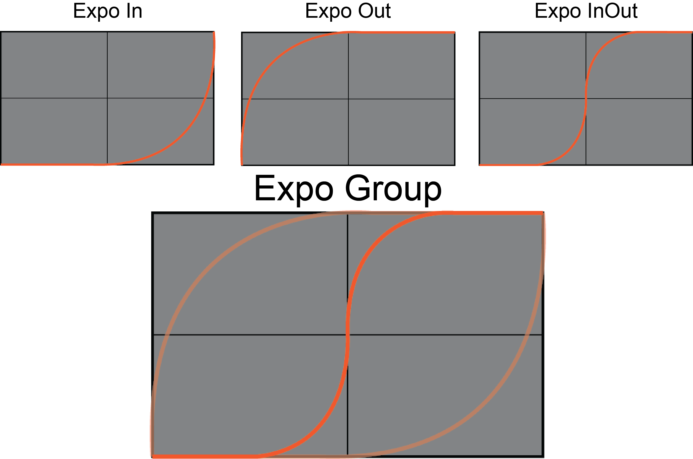
“Expo” is short for Exponential and as you can imagine, accelerates, decelerates, or both extremely quickly.
Circle Eases
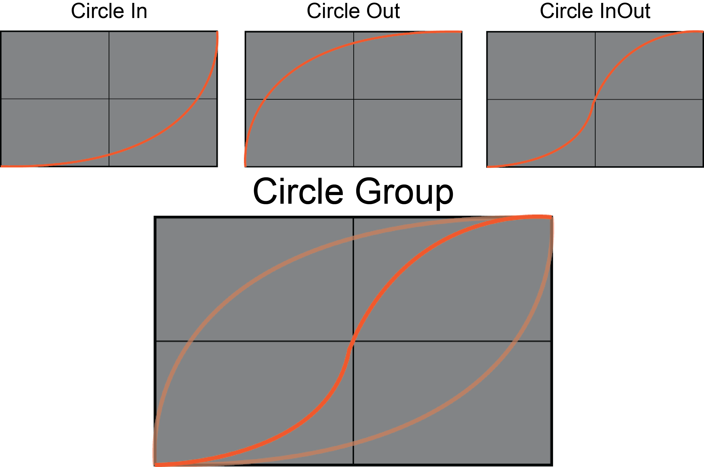
Another self-explanatory one. The curves in this ease are derived from the equation for half a circle.
Back Eases
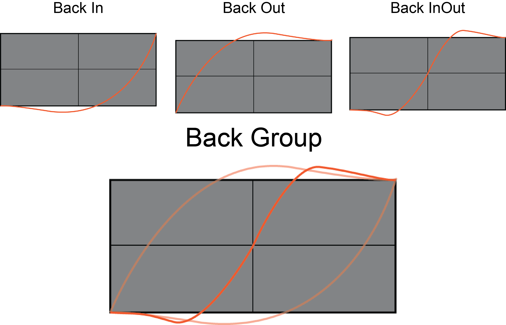
This group is the first one we see that that actually under- and over-shoots its target. This group is great for use in bringing menus up and down.
Elastic Eases
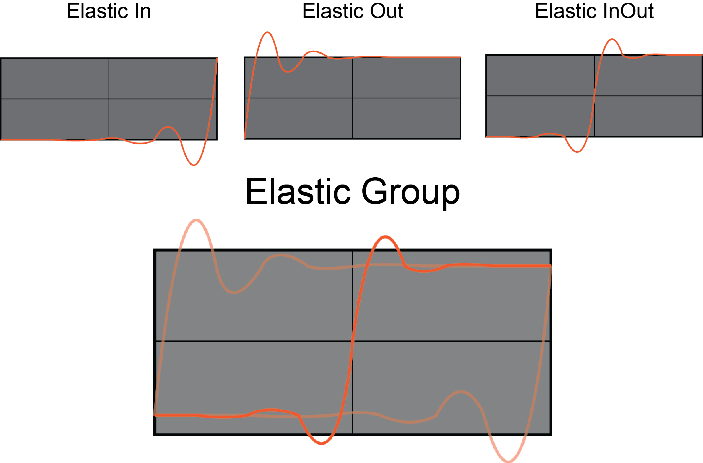
One of the exotic groups. These eases give the illusion of elasticity, both at the front of the action, the end, and at the front and end.
Bounce Eases

Another of the exotic groups, these eases give the illusion that an object bounces at the beginning, end, or both during the action that uses them.
Now that we’ve gone through the most commonly used standard and exotic eases, let’s take a look at how you can make some of these yourselves–as well as any of your own invention–as sample curves in Zero.
Using the SampleCurve Editor
The SampleCurve editor is Zero’s tool for creating your own curves to apply to any number of things, including the Ease parameter in Actions. As you saw above, eases can be represented on a graph as a function of change over time. The same applies to the SampleCurve editor. Let’s take a closer look at the SampleCurve editor and see how to create our own eases for Actions.
- Add a new SampleCurve resource named:
MyCustomEase - By default, the initial curve shows a linear progression. To begin manipulating the curve, you will need to add an
AnchorPointby double-clicking on the curve where you want to place it. You can then grab the anchor point–by holding down the left mouse button on top of the point–and move it around the graph, as is demonstrated below:

- If you need to add more than one anchor point on the curve, just double-click again on the curve where you want to place it. You can add an unlimited amount of anchor points, but eventually the curve will fill up to the point where you won’t be able to effectively edit it.
- Once you have an anchor point, you can manipulate the tangents of that point using one of four options: Linear Tangents, Weighted Linear Tangents, Split Tangents, and Weighted Split Tangents. All three are demonstrated below:
Linear Tangents

Weighted Linear Tangents

Split Tangents

Weighted Split Tangents

With unlimited anchor points and the tangent tools at your disposal, you can create countless custom eases for any purpose to use with your actions.
We’ll now create a simple sample project that will show the process of creating and applying custom eases to actions. In particular, we’ll be creating a basic menu screen with a few options that will move up from beneath the screen to settle in the middle, giving the menu a little animation.
Create a New Project
CreateNewProject
Setting Up the Level
First, let’s create a background object for our menu.
- Command :
CreateSpriteor - In the Properties window
- Set Name to: Background
- Add Component Area
- Under Sprite
- Set Color to:
[R: 0, G: 0, B: 0, A: 1.00]
- Under Area
- Set Size to:
[20, 20]
The Property window should now look like this:
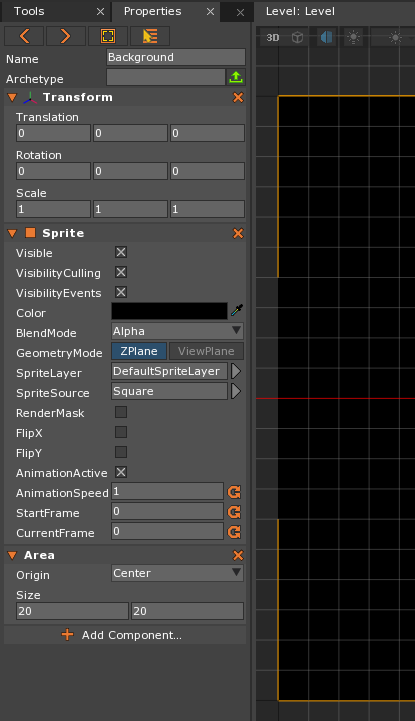
Now let’s create a few SpriteTexts that will act as our menu options.
- Command :
CreateSpriteTextor - In the Properties window
- Set Name to: PlayText
- Add Component Area
- Under Transform
- Set Translation to:
[0, -11, 0]
- Under SpriteText
- Set Visible to:
false- Set Color to:
[R: 0, G: 255, B: 255, A: 1.00]- Set FontSize to:
80- Set Text to:
Play the Game!- Set Align to:
Center
- Under Area
- Set Size to:
[10, 2]
The Property window should now look like this:
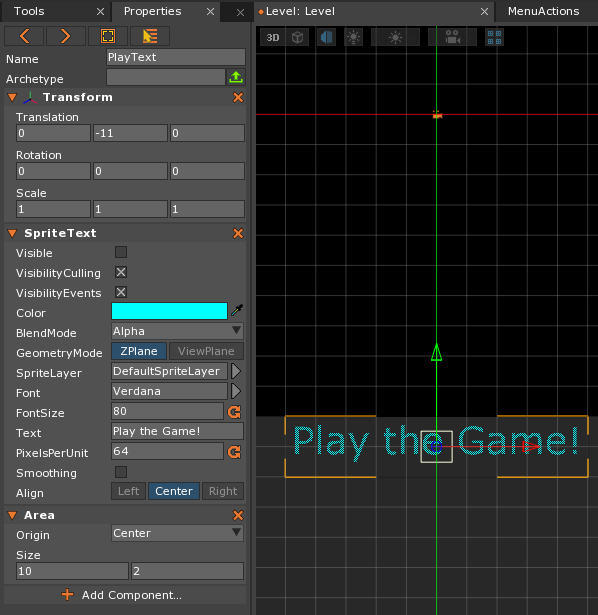
Now we need to make two copies of this object.
- In the Objects window
- Select the
PlayTextobject- Press Ctrl+D twice to duplicate the object twice
- Select the first duplicated object
- In the Properties window
- Change Name to: HowToText
- Under SpriteText
- Set Color to:
[R: 0, G: 255, B: 0, A: 1.00]- Set Text to:
How to Play
- In the Objects window
- Select the second duplicated object
- In the Properties window
- Change Name to: QuitText
- Under SpriteText
- Set Color to:
[R: 255, G: 0, B: 0, A: 1.00]- Set Text to:
Quit
Your Level Editor window should now look like this:
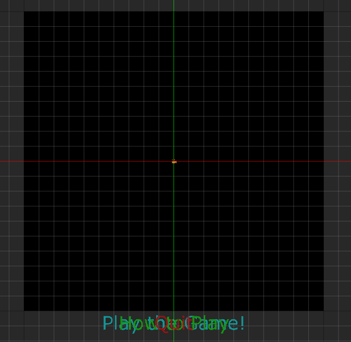
We now have our menu background and all the sprite text objects that will act as our menu options; however, they are currently invisible and below the level itself. We want these objects to rise up from the bottom of the screen, so we’ll need to make a component for the sprite text objects that does just that using Actions.
Adding and Editing a Sample Curve
- Add a new SampleCurve resource named:
MenuTextCurve
The SampleCurve editor window should pop-up. While we could make a simple curve similar to the quadratic group, let’s give the animation a little more flair, having the menu options slightly overshoot their target before settling back down to the place we want them to end up. In particular, we are going to make a version of the BackOut ease as can be seen in the graphs above. This ease will quickly move the object up to a value slightly above its target value, then slowly have it settle back down to the actual target value.
The easiest way to create this curve is to create an anchor point in the middle of the curve and then drag it up so that the anchor point is sitting slightly before the halfway point on the x-axis (~ 0.40) and to the top on the y-axis (~ 1.0). Don’t worry that the curve goes off the editor screen. We’re only taking it slightly above the limit of the editor so you can still have a fairly strong like so:
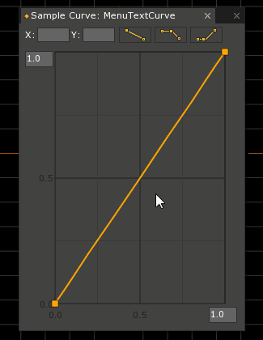
Next, we’ll want to smooth out the curve using the Linear Tangents (this is selected by default) that can be found above the graph in the SampleCurve editor. First, we’ll adjust the tangents of the anchor point we made, like so:
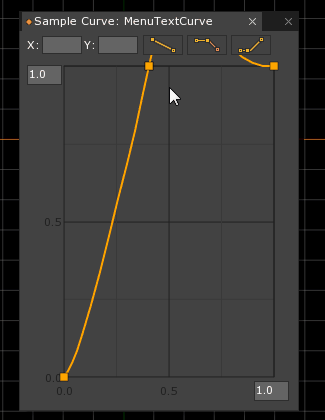
Finally, we’ll smooth out the last part of the curve using the tangents on the last anchor point (which is there by default at (1,1)), like so:
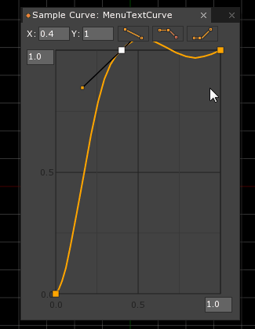
Now all that’s left to do is to update the properties in the MenuActions component of our menu objects.
- In the Objects window
- Select the
PlayTextobject
- In the Properties window
- Under MenuActions
- Set EndValue to:
[0, 3, 0]- Set TimeToMove to:
1- Set CustomEase to:
MenuTextCurve
- In the Objects window
- Select the
HowToTextobject
- In the Properties window
- Under MenuActions
- Set EndValue to:
[0, 0, 0]- Set TimeToMove to:
1- Set CustomEase to:
MenuTextCurve- Set StartDelay to:
0.4
- In the Objects window
- Select the
QuitTextobject
- In the Properties window
- Under MenuActions
- Set EndValue to:
[0, -3, 0]- Set TimeToMove to:
1- Set CustomEase to:
MenuTextCurve- Set StartDelay to:
0.8
When you press the Spacebar, the menu objects should now rise up from the bottom with a short delay in between each one, slightly overshoot the target value, and finally settle back down to the target value, like so:
Conclusions
In this lesson, we have looked at how eases affect the change in acceleration of a value change when used in Actions (or “tweening”). We have seen numerous examples of ease types visualized on a graph and how those visualizations can be implemented in Zero using the SampleCurve editor. Finally, we made a simple project where we created our own custom ease using the SampleCurve editor and applied it to actions that bring menu options up from beneath the camera.
On Your Own
- Create another sample curve that will act as an custom ease for an action that brings the menu options back down below (or takes them above) the view of the camera. You could use a BackIn ease to keep it symmetrical with the way the menu options came in or you come up with a completely different one that expresses something else.
- Make a simple 2D platformer with moving platforms that are all animated using actions. Create a number of custom eases to apply to the movement of the platforms, making the level increasingly challenging for the player.
- Create a 2D or 3D camera system that makes cinematic moves (using translation and rotation value changes) using actions that take advantage of custom eases for specific, dramatic effects.